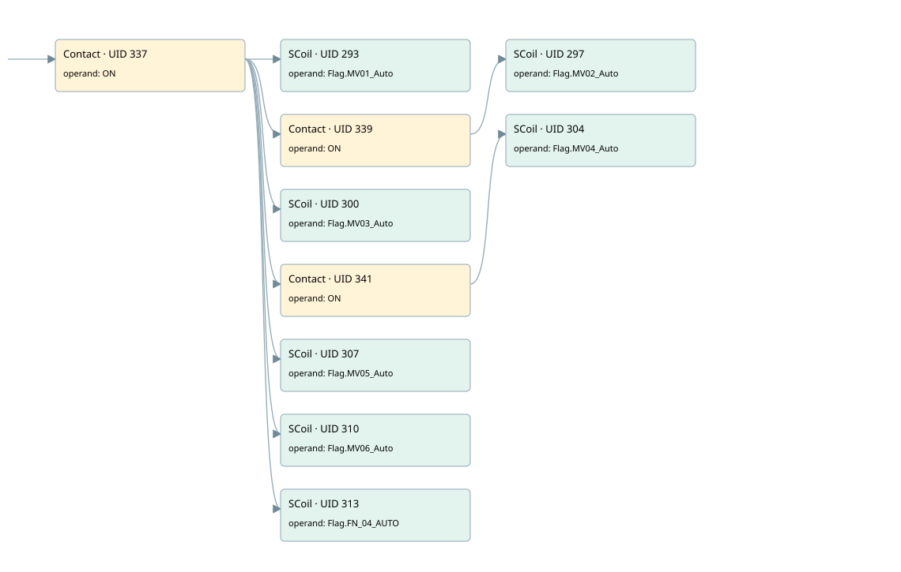

plants defaults
startup only · 검색 색인 순서 4 · 원본 내부 NID 추정 4
백업 PLF 원본의 2637819 바이트 위치에서 복원한 XML. 검색 문서 404의 객체 키 16102200650f000000000000와 연결했다. 이름 해석 10/10개. 남은 RefId는 상수 또는 미해석 참조다.
연결 구조 다시 그리기
원본 Part/PCon/Wire를 이용한 연결도다. TIA 화면의 래더 배치 또는 실행 결과를 재현한 그림은 아니다. 핀 연결은 아래 표와 원본 XML을 기준으로 읽는다. 노드 위에 마우스를 두면 피연산자 이름을 볼 수 있다.

접점·코일·블록과 피연산자
| Part UID | Gate | Negated 핀 | 연결 피연산자 |
|---|---|---|---|
| 337 | Contact | operand = ON | |
| 293 | SCoil | operand = Flag.MV01_Auto | |
| 339 | Contact | operand = ON | |
| 297 | SCoil | operand = Flag.MV02_Auto | |
| 300 | SCoil | operand = Flag.MV03_Auto | |
| 341 | Contact | operand = ON | |
| 304 | SCoil | operand = Flag.MV04_Auto | |
| 307 | SCoil | operand = Flag.MV05_Auto | |
| 310 | SCoil | operand = Flag.MV06_Auto | |
| 313 | SCoil | operand = Flag.FN_04_AUTO |
접점 경로를 펼친 조건식
Contact·O/A·비교기의 원본 연결을 읽기 쉽게 펼친 보조 해석이다. POWER는 전원 레일 시작을 뜻한다. 호출 블록·에지·타이머의 내부 동작과 다중 쓰기 순서는 이 표로 실행 검증하지 않았다. 미해석 핀과 RefId는 원문 연결표에서 확인한다.
| UID | 동작 | 대상 | 원본 접점 경로 | 내용 |
|---|---|---|---|---|
| 293 | SCoil | Flag.MV01_Auto | ON | 조건 성립 시 Set |
| 297 | SCoil | Flag.MV02_Auto | ON | 조건 성립 시 Set |
| 300 | SCoil | Flag.MV03_Auto | ON | 조건 성립 시 Set |
| 304 | SCoil | Flag.MV04_Auto | ON | 조건 성립 시 Set |
| 307 | SCoil | Flag.MV05_Auto | ON | 조건 성립 시 Set |
| 310 | SCoil | Flag.MV06_Auto | ON | 조건 성립 시 Set |
| 313 | SCoil | Flag.FN_04_AUTO | ON | 조건 성립 시 Set |
원본 배선 연결
| Wire UID | 동일 Wire 연결 끝점 |
|---|---|
| 324 | ORef 314 (ON) ↔ Part 337.operand |
| 325 | ORef 315 (Flag.MV01_Auto) ↔ Part 293.operand |
| 326 | ORef 316 (ON) ↔ Part 339.operand |
| 328 | ORef 317 (Flag.MV02_Auto) ↔ Part 297.operand |
| 329 | ORef 318 (Flag.MV03_Auto) ↔ Part 300.operand |
| 330 | ORef 319 (ON) ↔ Part 341.operand |
| 332 | ORef 320 (Flag.MV04_Auto) ↔ Part 304.operand |
| 333 | ORef 321 (Flag.MV05_Auto) ↔ Part 307.operand |
| 334 | ORef 322 (Flag.MV06_Auto) ↔ Part 310.operand |
| 335 | ORef 323 (Flag.FN_04_AUTO) ↔ Part 313.operand |
| 338 | Part 337.out ↔ Part 293.in ↔ Part 339.in ↔ Part 300.in ↔ Part 341.in ↔ Part 307.in ↔ Part 310.in ↔ Part 313.in |
| 340 | Part 339.out ↔ Part 297.in |
| 342 | Part 341.out ↔ Part 304.in |
| 343 | Powerrail {} ↔ Part 337.in |
식별자 해석 근거 10개
| ORef UID | RefId | 이름 | IdentXmlPart 파일 | 해석 방법 |
|---|---|---|---|---|
| 314 | 1 | ON | 0047-IdentXmlPart.xml | UID/RID + search-text + NID agreement |
| 315 | 42 | Flag.MV01_Auto | 0563-IdentXmlPart.xml | UID/RID + search-text + NID agreement |
| 316 | 1 | ON | 0047-IdentXmlPart.xml | UID/RID + search-text + NID agreement |
| 317 | 43 | Flag.MV02_Auto | 0563-IdentXmlPart.xml | UID/RID + search-text + NID agreement |
| 318 | 44 | Flag.MV03_Auto | 0563-IdentXmlPart.xml | UID/RID + search-text + NID agreement |
| 319 | 1 | ON | 0047-IdentXmlPart.xml | UID/RID + search-text + NID agreement |
| 320 | 45 | Flag.MV04_Auto | 0563-IdentXmlPart.xml | UID/RID + search-text + NID agreement |
| 321 | 46 | Flag.MV05_Auto | 0563-IdentXmlPart.xml | UID/RID + search-text + NID agreement |
| 322 | 47 | Flag.MV06_Auto | 0563-IdentXmlPart.xml | UID/RID + search-text + NID agreement |
| 323 | 48 | Flag.FN_04_AUTO | 0563-IdentXmlPart.xml | UID/RID + search-text + NID agreement |
검색 코드 보조 자료
참조 명칭을 찾기 위한 자료이며 실행 순서나 AND/OR 관계는 위 연결표로 확인한다.
"on" "flag".mv01_auto "on" "flag".mv02_auto "flag".mv03_auto "on" "flag".mv04_auto "flag".mv05_auto "flag".mv06_auto "flag".fn_04_auto